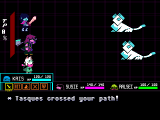
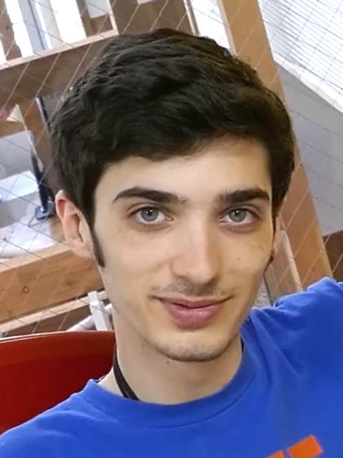

Overview
Deltarune is an episodic role-playing video game created by American indie developer Toby Fox. Set in a parallel universe to his 2015 game Undertale, it follows Kris, a human teenager predetermined to save the world alongside Susie, a monster, and Ralsei, a prince from the Dark World. Throughout the story, the party establishes relationships with a variety of allies and opponents.
The combat system is turn-based and uses bullet hell mechanics. As in Undertale, enemy encounters can be resolved peacefully or through violence. The game shares several characters and gameplay elements with Undertale, but takes place in a separate setting and features an overhauled battle system with multiple party members.
The first two chapters were released as free demos in 2018 and 2021, while the third and fourth chapters were made available in 2025 with the game's paid release. The fifth chapter was released as a free update in June 2026, with the sixth planned for 2027 and a seventh planned for a later release. The game has been praised by critics for its soundtrack, characters, narrative, sense of humor, and LGBTQ+ representation.
Gameplay
Deltarune is a role-playing video game with a top-down perspective. The player controls Kris Dreemurr and has a party of other characters who select actions for during battle. The game features both overworld and combat sections. In the overworld, the player can solve puzzles, collect items, and interact with characters and the environment. Different chapters introduce unique traversal mechanics, such as climbing, or statues that shift the game into a 2D platformer with action-based combat.
Unlike Undertale, Deltarune does not have a random encounter system. Instead, players can see the enemies in the environment before they encounter them, allowing for the possibility of avoiding or deliberately initiating combat.
The game uses a turn-based combat system, where players can choose from a set of actions each turn: fight, act, item, spare, and defend. As in Undertale, players control a heart-shaped soul in a fixed area and must dodge enemy attacks in the form of bullets, though the exact mechanics are sometimes unique to the respective enemy. Defending or "grazing" an incoming attack by letting it come close to the heart without getting hit by it increases the tension points (TP) gauge, which allows party members to use spells or special abilities.
Players may use acts and spells to spare enemies non-violently. The second chapter introduced the ability to use this strategy to recruit enemies to live in the player's Castle Town. Alternatively, fighting an enemy can lead to them being defeated violently. Starting in Chapter 2, defeating enemies violently causes party members to gain HP and magic power after the battle ends, but enemies defeated this way cannot be recruited for the rest of the chapter.

Plot
Deltarune's narrative spans seven chapters, of which five have been released. Although it features characters and elements from Undertale, it takes place in a parallel universe distinct from that game's setting.
Chapter 1 – The Beginning
The game begins with a voice prompting the player to create an avatar, but the "vessel" is ultimately discarded, as "no one can choose who they are in this world." Instead, the player is given control of human teenager Kris Dreemurr, who arrives at school late. After being paired with their delinquent monster classmate Susie for a group project, their teacher Alphys sends them to get supplies. However, they fall into a strange realm within the supply closet, called a Dark World, where they meet the dark prince Ralsei. He welcomes them to his empty Castle Town and tells them of a prophecy in which they are three heroes destined to seal the geyser-like Dark Fountains that sustain the Dark Worlds.
A new Dark Fountain has created a Dark World ruled by the tyrannical King, which threatens to upset the balance between the Light and Dark Worlds. King's son Lancer opposes the party before eventually changing sides. Unwilling to confront his father or see his new friends hurt, Lancer betrays the party and imprisons them, but Susie later reconciles with him. The three confront and defeat King, who remains unrepentant even after being spared. After sealing the Fountain, Kris and Susie wake up in an unused classroom. That night, after returning home, Kris rips out their soul, locks it away, and draws a knife.
Chapter 2 – A Cyber's World
Kris and Susie discover a new Dark World within the library's computer lab, ruled by a laptop Darkner named Queen, who has recruited their classmate Berdly and kidnapped Noelle Holiday. Queen reveals that the Dark Fountains were created by a mysterious figure known as the Roaring Knight, and intends to force Noelle to open another Fountain. Ralsei warns that opening too many Fountains will cause the prophecy's apocalyptic Roaring.
After Kris seals the Fountain, the group awakens in the computer lab, and Noelle and Berdly dismiss the adventure as a dream. Once everyone falls asleep, Kris removes their soul again and creates a Dark Fountain in the living room.
Chapter 3 – Late Night
In the new Dark World, Ralsei attempts to dissuade Kris and Susie from becoming too attached to Darkners, since they are unreal alternate manifestations of everyday objects. They are interrupted by Tenna, a Darkner created from Toriel's old television, who refuses to let them pass to the Fountain. Feeling obsolete after the Dreemurr and Holiday families drifted apart, he explains that the Roaring Knight promised him relevance in exchange for keeping the Fountain open.
After the party defeats Tenna, he agrees to let them seal the Fountain, but is attacked by the Knight. The Knight abducts police officer Undyne, and Kris and Susie pursue them to Hometown's old emergency shelter, whose lock requires three numeric codes.
Chapter 4 – Prophecy
Concluding that their best lead on the bunker codes is Noelle's mother, Mayor Carol Holiday, Kris and Susie investigate Holiday Manor. Kris finds a code inside the guitar of Noelle's missing older sister December, but is unable to read it before Carol expels Susie from the house.
Returning to the church, they find it transformed into a Dark World depicting the prophecy, where they meet a Darkner patterned after the deceased Lightner Gerson Boom. Ralsei ultimately breaks down and admits he has been hiding the true prophecy, including its tragic ending. The party confronts the Knight, who opens another Fountain and creates a Titan, a monstrous harbinger of the Roaring. They defeat the Titan with Gerson's help, and Susie accidentally glimpses the prophecy's ending before smashing the image.
Chapter 5 – Festival Day
Kris returns home to put the soul back in their body and finds the Castle Town Darkners preparing Susie for a date with Noelle at Hometown's Festival. After spending the day together, the two share a tender moment on the lakeshore, but Noelle leaves upon hearing that her father Rudy fell while working on the lights. With Susie distracted, Kris removes the soul to create a Fountain inside Asgore's flower store.
Asgore is taken in by Flowey, a human-like "Plant" character formed from a preserved golden flower. The party encounters and befriends six more flower Plants, but Asgore rejects their attempts to save him. After the party defeats the flowers, Asgore apologizes, alluding to a previous tragedy in Hometown connected to the Dark Worlds. A second Fountain suddenly opens, the Knight abducts Asgore, and Flowey warns the party of a darkness growing beneath the town.
Alternate route
During Chapter 2, players can initiate an alternate route, commonly referred to as the "Snowgrave" route, the "Weird" route, or "Side B", by backtracking and forcing Noelle to freeze every enemy encountered. Spamton, a spambot normally encountered in an optional sidequest, sells the player a powerful Thorn Ring item for Noelle to equip. During a battle with Berdly, the player orders Noelle to use a new spell, Snowgrave, to freeze him whole.
Chapter 3 proceeds mostly as normal with only minor dialogue changes. In Chapter 4, the soul takes control of Kris and communicates directly with Noelle before forcing the thorn back into her. In Chapter 5, Noelle begs Kris to take control of her and make her do something "crazy" and "impossible"; the two walk into the lake until they are submerged, and the text "Insert Chapter 7 Side B" appears before the player is returned to the chapter select screen.
Development and release
The idea for Deltarune came to Toby Fox in a fever dream he had in 2011 in college. In the dream, he saw the ending of a video game and was determined to create it. Fox was also inspired by a collection of playing card designs posted on Tumblr by artist Kanotynes. Development started in 2012 but was abandoned before Fox could create the first room. Some music from this initial attempt was recycled for Undertale, most notably the main battle theme, which became "Bonetrousle".
During the Kickstarter campaign of Undertale in 2013, Fox decided that if he were to finish making Undertale, he would revisit Deltarune by combining the original concept of the game and Undertale. The game's title is an anagram of Undertale. Following the release of Chapter 4, he compared the scope of each chapter to a full game, describing the first four chapters as the equivalent of "two and a half Undertales".
Deltarune is being developed in GameMaker Studio 2. The game introduces a new battle system comparable to the one used in the Final Fantasy franchise, contrasting with Undertale's combat system.

Art, character design, and writing
Temmie Chang, who had previously assisted Fox with character art in Undertale, serves as the main artist for Deltarune. Fox came up with Susie's design after playing Phoenix Wright: Ace Attorney, originally basing her on Maya Fey as "nice and cute"; as her creation progressed, she eventually turned into more of a "thug". Ralsei's name was derived from Ralse, a character from an uncompleted RPG Maker game that Fox's oldest brother made as a child.
Fox was unsure if anyone apart from himself would like Spamton, as some of the test players thought he looked scary and disliked his design. Despite this, Spamton became popular with players, with merchandise featuring the character selling out instantly.
Music
The game's soundtrack was primarily composed by Toby Fox, who served as the main composer for its music. Along with new leitmotifs for Deltarune, it also incorporates leitmotifs from the Undertale soundtrack. The soundtrack mainly comprises multiple albums released alongside each respective chapter; these feature guest appearances by Laura Shigihara, Lena Raine, Marcy Nabors, Alex Rosetti, Itoki Hana, insaneintherainmusic, Rakuichi, Camellia, and Trevor Alan Gomes. Each album is published under Materia Collective.
Initial announcement and release
After previously teasing something Undertale-related a day earlier, Fox released the first chapter of Deltarune for free on October 31, 2018. Initially disguised as a "survey program", it was then described as a game "intended for people who have completed Undertale". The first chapter was later released for free on Nintendo Switch and PlayStation 4 on February 28, 2019. The console versions were developed and published by 8-4.
Development of the second chapter began in May 2020. Fox spent most of his time experimenting with game engines other than GameMaker Studio 2, but eventually concluded that GameMaker "still felt like the best fit for the project". During a livestream celebrating the sixth anniversary of Undertale in September 2021, Fox announced that the second chapter would be released for free two days later, on September 17.
Paid release and further content
Deltarune's menu indicates a total of seven chapters. Initially, the third, fourth, and fifth chapters were intended to be released as a single paid title at once. Due to the ongoing length of development, Fox announced that the initial paid release would only include the third and fourth chapters. He recruited Robert Sephazon as a producer at the beginning of 2024, and his team set an internal deadline of September 1 for the completion of Chapter 4, which was met. Owing to his wrist issues, Fox used speech-to-text software to input text into his computer, relying on other team members to do the programming.
During a Nintendo Direct in April 2025, a paid version of Deltarune was announced for release on June 5 as a launch title for the Nintendo Switch 2. A version for the PS4, Switch, PS5, and Windows was released earlier on June 4. It contained the first four chapters, with future content intended as free updates. Chapter 5 was released on June 24, 2026. Fox has said he intends to release Chapter 6 in 2027, and that Chapters 6 and 7 would be released separately.
Reception
The first chapter of Deltarune garnered many comparisons to Undertale. Jason Schreier of Kotaku called it similarly "charming, funny, and impactful", and Dominic Tarason of Rock Paper Shotgun compared it to "a higher-budget production". Nintendo Life's Mitch Vogel was less positive, feeling that despite "solid" gameplay and story content, it failed to innovate from Undertale, resulting in "uninspired sameness".
| Publication | Score |
|---|---|
| OpenCritic | 100% recommend |
| GamesRadar+ | 4.5/5 |
| IGN | 9/10 |
| Nintendo Life | 8.5/10 |
| TechRadar | 4.5/5 |
| Checkpoint Gaming | 7.5/10 |
The initial version of the paid release, containing Chapters 1–4, also received positive reception. Brendan Graeber of IGN described Deltarune as "something incredible" that he was "not likely to forget". Mitch Vogel, writing again for Nintendo Life, thought that the game alleviated his previous criticism by establishing a "distinct identity" which made it a "worthy follow up to Undertale", but viewed its unfinished nature as leaving a "lingering feeling of dissatisfaction".
Shaun Cichaki of Vice described the combat design as more "refined and elegant" than that of Undertale. Conversely, TechRadar reviewer Vic Hood criticized some attacks for being "near impossible" to avoid on the Nintendo Switch 2. Multiple reviewers praised the art direction, with Hood calling it "stunning". New York Times writer Harold Goldberg described the soundtrack as "remarkably diverse", and Vogel said the "deep and varied" soundtrack demonstrated Fox was a "master of creating atmosphere".
The game's plot and writing were also praised. Hood stated that the characters began to feel like "real friends", and multiple reviewers praised the game's comedy. Alisandra Reyes of Game8 praised the "deeper and more emotionally resonant" nature of the story, though she criticized the "meandering" pace of Chapter 3.
Awards
The game's soundtrack was nominated for the Game Audio Network Guild / MAGFest People's Choice Award at the 2019 G.A.N.G. Awards. At the 2025 Golden Joystick Awards, the game was nominated for Best Indie Game – Self Published and Best Soundtrack. It was awarded "Best Game" in the 2025 GameMaker Awards.
Player count and revenue
After the release of Deltarune's demo containing Chapters 1 and 2, it attracted around 100,000 concurrent players on Steam, far higher than Undertale's lifetime record. Deltarune was also one of the highest-grossing games on Steam in terms of revenue upon the initial release of Chapters 3 and 4. The game was also the best-selling digital game on Switch 2 upon the console's launch, outperforming both Nintendo Switch 2 Welcome Tour and Mario Kart World. Chapter 5 attracted over 290,000 concurrent players on Steam upon its release, breaking the previous record of 133,000.
Notes
- 8-4 ported and published the console versions.
- Critics and the game's lead developer have variously described Deltarune as a "parallel story" to Undertale, despite early reports suggesting it as a direct sequel.
- In-game, plants are revealed as being neither Lightners nor Darkners at the end of Chapter 5.